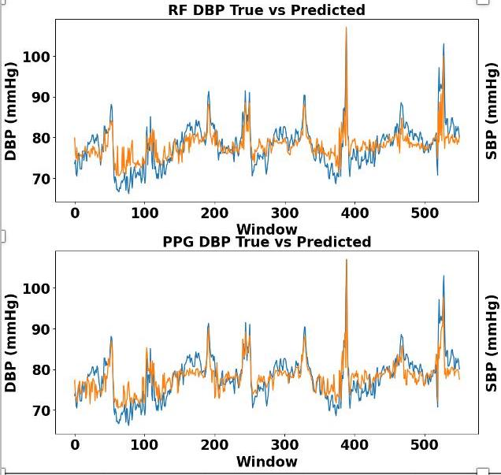

Current Projects
Check out what I'm working on right now!
UT ISPE Website Development

ML Based BP Prediction
Intern@AMD
Check out what I'm working on right now!
UT ISPE Website Development
ML Based BP Prediction
Intern@AMD
A collection of my favorite projects from my time at UT Austin and the DTU!
Analysis of the Texas Power Grid
Designing a Carbon Neural BioFuel Plant
Simulating an Energy Island in Python